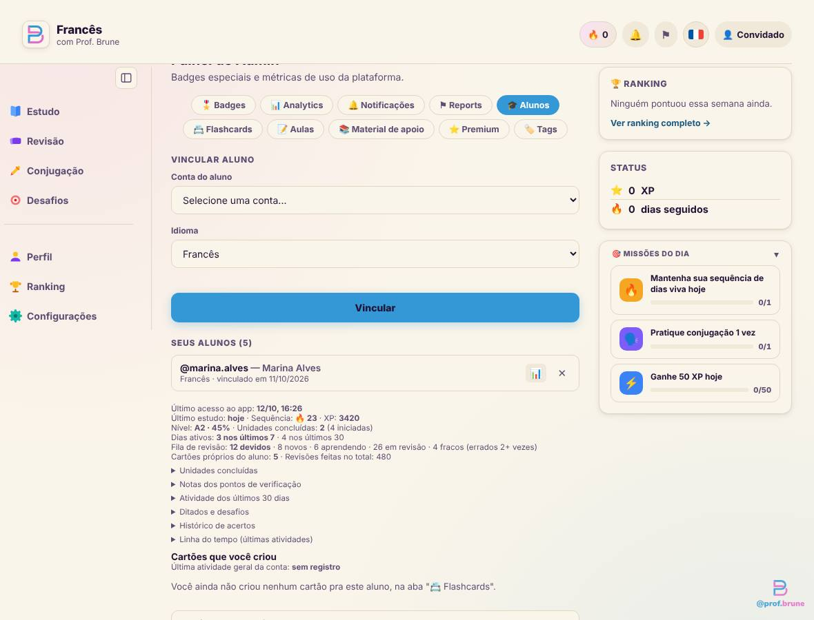
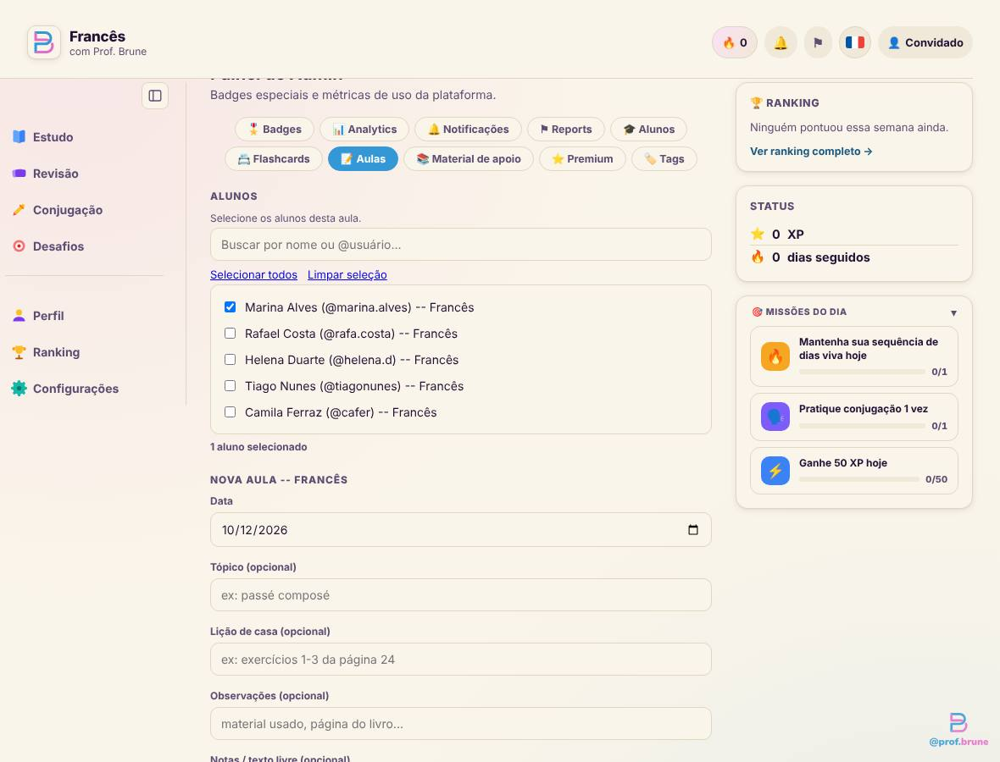
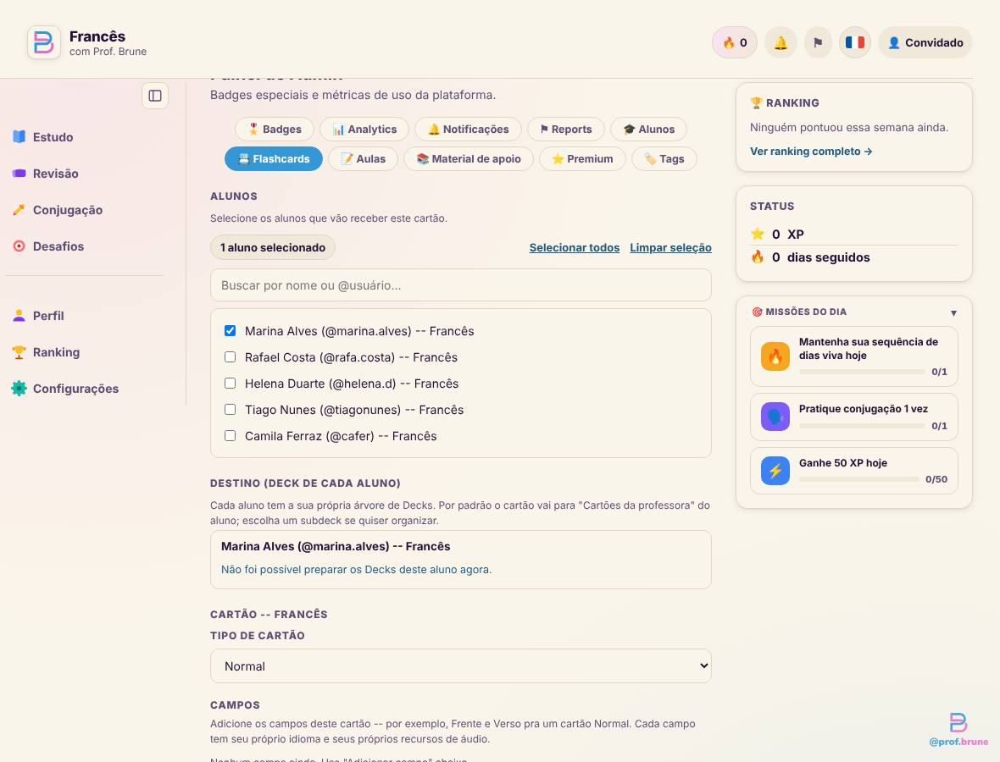

Professora (abre aqui)
- Alunos: quadro geral da turma e a ficha de cada aluno
- Flashcards: criar e acompanhar cartões
- Aulas: diário de aulas
- Material de apoio: fica como está até a sua vez
Essas são as telas atuais, fotografadas do app com dados de exemplo. Os problemas abaixo vieram da leitura do código e dessas telas.



Mesma informação de hoje, com hierarquia: o geral no topo, o detalhe sob demanda, uma ação principal por tela. Tudo abaixo é o CSS real do Design System (clique nas abas, nas linhas e nos botões).
| Aluno | Curso | Último estudo | Sequência | Revisões vencidas | Acerto (7 dias) | Situação |
|---|
Situação, regra proposta (a confirmar com você): Em dia estudou nos últimos 3 dias, Atenção há 4 a 6 dias, Parado há 7 dias ou mais.
4 dias ativos · 1 lição concluída. Passe o mouse sobre um quadrado para ver o dia.
Os cartões vão para o deck Cartões da professora de cada pessoa. Escolher outro deck
Espaço reservado: a função nova de Flashcards que você mencionou entra aqui, como uma etapa ou uma aba. Preciso que você me conte o que ela faz.
| Cartão | Para | Deck | Tags | Formato | Criado em | |
|---|---|---|---|---|---|---|
| le chat → o gato | MARC | Cartões da professora | animais A1 | Áudio | 09/10 | |
| Je ___ au marché → vais | CF | Verbos | verbos | Completar a frase | 05/10 | |
| la maison → a casa | MA | Cartões da professora | casa | Imagem | 01/10 |
Dá para escolher peças do shadcn e do catálogo dele. Não instalamos o shadcn (ele exige React): refazemos o visual em HTML e CSS puro, sobre o Pico, com as suas cores. As peças que precisam de comportamento ganham um JavaScript pequeno, ou usam o que o navegador já tem. Marque as que você quer.
| Componente do shadcn | Como entra | Onde seria usado no painel |
|---|---|---|
| Button, Input, Select, Textarea, Checkbox, Radio, Switch | Já temos | Todos os formulários |
| Card, Table, Badge, Avatar, Alert, Progress, Tabs | Já temos | Blocos, listas, situação, abas |
| Accordion, Dropdown Menu, Tooltip, Dialog | Já temos (Pico) | Menu "Ações", confirmações |
| Breadcrumb | Só CSS | Alunos / Marina Alves |
| Pagination | Só CSS | Lista de cartões |
| Toggle Group (controle segmentado) | Só CSS | Alternar visões e áreas |
| Skeleton | Só CSS | Carregando a lista de alunos |
| Alert com título, Separator, Kbd, Avatar em grupo | Só CSS | Avisos, aulas em grupo |
| Toast (Sonner) | CSS e JS pequeno | "Cartão criado", "Vínculo removido" (o site já tem um toast) |
| Sheet / Drawer | CSS e JS pequeno | Ficha rápida do aluno ao lado da lista |
| Combobox, Command (busca com atalho) | JS médio | Escolher alunos e decks com busca |
| Data Table (ordenar, filtrar, paginar) | JS médio | Tabela de alunos e de cartões |
| Date Picker, Calendar | Campo nativo ou JS médio | Data da aula |
| Chart | Biblioteca à parte | Gráficos de evolução (Admin, Fase 3) |
| Carousel, Resizable, Input OTP, Context Menu | Não recomendo | Sem uso no painel |
O que ela faz? Não encontrei nada no código nem nos documentos. O desenho deixa um espaço reservado (etapa ou aba) para ela.
Em dia, Atenção e Parado: 3 dias e 7 dias servem? Esse número muda quem aparece em alerta.
Hoje os dados de cada aluno vêm de uma consulta por aluno. Para 6 a 20 alunos dá para buscar todos de uma vez ao abrir a tela. Se a turma crescer muito, vale criar uma consulta única no banco (isso exigiria uma migration, rodada por você no SQL Editor).
Hoje criar cartão exige ser admin (regra do banco). Com outras professoras no futuro, isso precisará mudar. Nesta fase, nada muda: só você usa.
Diga quais da tabela acima você quer. As de "Só CSS" entram sem custo; as de JavaScript eu avalio uma a uma.
Fica na área da Professora, mas fora desta fase. Ok deixar como está até a Fase 3?